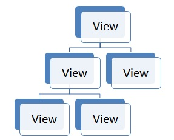

Hello World
This chapter shows you the basic elements of a Rikulo application by implementing a simple "Hello World" application.
A Rikulo application consists of
- At least one Dart file to hold the Dart code of your application
- At least one HTML page to load the Dart file(s) and, optionally, to define static content
Please refer to here for installing Rikulo to your application.
If you prefer to define the user interfaces in a manner similar to authoring HTML/XML pages, please refer to Rikulo UXL. It compiles the user interface specified in XML into Dart code.
The Dart Code
Here is a simple "Hello World" application.
import 'package:rikulo_ui/view.dart';
void main() {
new TextView("Hello World!") //create UI
.addToDocument(); //make it available to the browser
}
As shown above, there are basically three steps to implement a Rikulo application.
- Import the
package:rikulo_ui/view.dartlibrary. - Draw your user interface by instantiating UI elements (
Viewand subclasses). - Show your user interface on the browser by invoking
View.addToDocument().
Import the package:rikulo_ui/view.dart library
Libraries to import depend on your requirement. The package:rikulo_ui/view.dart library is usually what you will import, since it has many UI elements.
Draw your user interface
The user interface elements in a Rikulo application are built using views. A view is the basic building block. It draws something on the screen and interact with the user.
A view is an instance of View and its subclasses. To define the user interface is all about picking up the right views, instantiating them and putting them together.
For example, we instantiate an instance of TextView to show the greeting message in this sample application.
new TextView("Hello World!");
Views can be arranged in a hierarchy of views, as show below, to define more complex user interface you want. The view at the top is called the root view.

For example, we can define the user interface as follows.
new View()
..layout.type = "linear" //arrange the layout of child views linearly
..addChild(new TextView("Name")) //a label
..addChild(new TextBox()); //an input
As shown above, a hierarchy of views is arranged by use of View.addChild(). Furthermore, View.layout controls how to arrange the child views (aka., subviews). For more information, please refer to the UI Overview.
Show your user interface on the browser
Notice that the hierarchy of views you create is just a tree of normal objects. To make it available to the browser, you can invoke View.addToDocument() against the root view. For example,
new View()
..layout.type = "linear"
..addChild(new TextView("Name"))
..addChild(new TextBox())
..addToDcument(); //make it available to the browser
On the hand, you can remove a hierarchy of views from the browser by invoking View.remove(). If you want to remove a branch, you can invoke View.remove().
If you want to add the user interface into a particular DOM element (Element) rather than document.body (which is the default), you can specify the DOM element as the ref argument. For example, assume you want want to put it under a DOM element named part, you can do as follows.
view.addToDocument(ref: document.query("#part"));
For more information, please refer to Embed in HTML Page.
Handle Events
The view will notify the application about the user's interaction with events. You can listen and handle the events with View.on. For example, we can rewrite the "Hello World" application to change the greeting message when the user clicks the greeting message as follows.
new TextView("Hello World!")
..on.click.add((event) {
(event.target as TextView).text = "Welcome to Rikulo.";
event.target.requestLayout();
})
..addToDocument();
Notice that we invoke
View.requestLayout()to reposition the greeting message, since we change its content and need to reposition it. For more information, please refer to the Layouts chapter.
The HTML page
To run an application, you need a HTML page to define the user interface in HTML and specify the Dart file(s) to load. Here is a typical example:
<!DOCTYPE html>
<html>
<head>
<title>Foo</title>
<meta name="viewport" content="width=device-width, initial-scale=1.0, maximum-scale=1.0, user-scalable=no" />
<link rel="stylesheet" type="text/css" href="packages/rikulo_ui/resource/css/default/view.css" />
</head>
<body>
<script type="application/dart" src="HelloWorld.dart"></script>
<script src="packages/browser/dart.js"></script>
</body>
</html>
First, you have to specify the CSS file to load. Depending on your requirement, you can specify any files you want, as long as including view.css (or a customized version of it).
<link rel="stylesheet" type="text/css"
href="packages/rikulo_ui/resource/css/default/view.css" />
By default, the Dart Package Manager installed the resources under the
packages/rikulo_ui/resourcefolder.
Second, you have to specify your Dart file. In this application, it is called HelloWorld.dart.
<script type="application/dart" src="HelloWorld.dart"></script>
Also notice that Rikulo assumes HTML 5, so you shall specify <!DOCTYPE html> at the beginning. In additions, it is, though optional, suggested to specify the viewpoint meta tag as follows, if you want to run the application on mobile devices:
<meta name="viewport" content="width=device-width, initial-scale=1.0, maximum-scale=1.0, user-scalable=no" />
It is harmless if running on a desktop browser.
Then, you visit this page to see how it works in live.